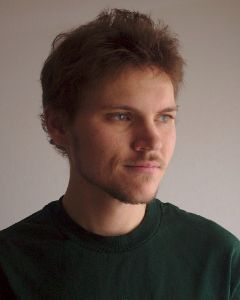

Brady Lane’s photography is inspired by the area in which he spent most of his life so far. Beautiful landscapes marred by no people and dotted with historical buildings show the essence of life in the wilderness of northern New Mexico, where Brady grew up. Brady was first introduced to photography by his grandmother, who soon instilled in him a passion for transforming the natural world into a work of art. Now based in Denver, Colorado, Brady enjoys backpacking, mountain biking, and shooting macro and abstract images. Besides local landscapes, a few foreign travels have added intrigue and variety to his photographs.
“My goal is to capture ordinary things in a creative way to show a unique view of nature.”